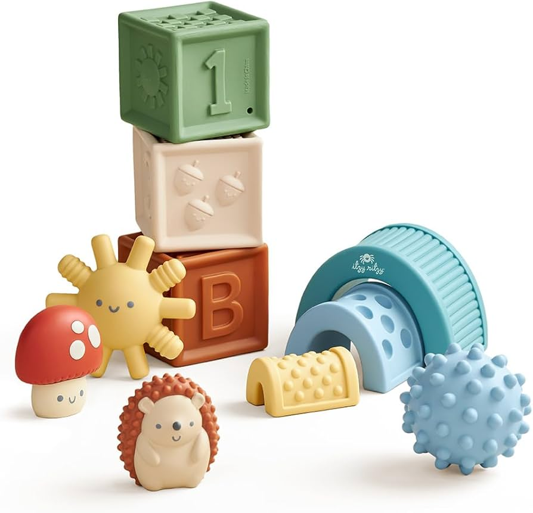
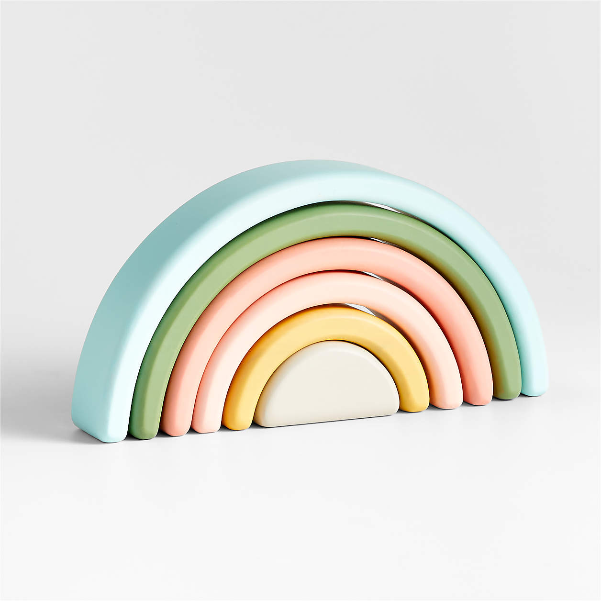
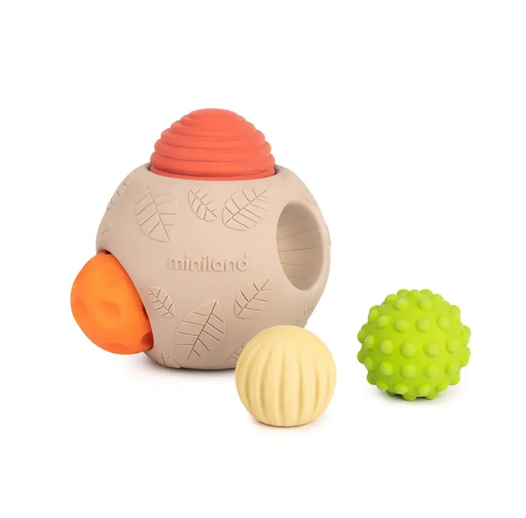
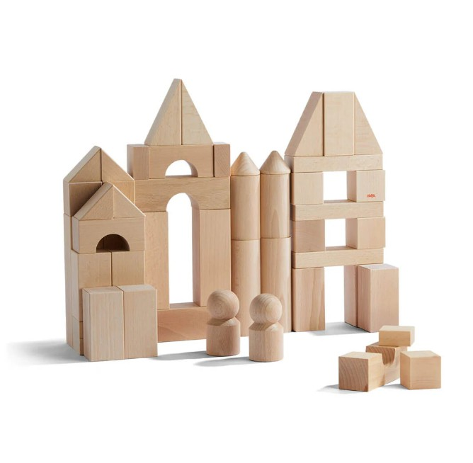
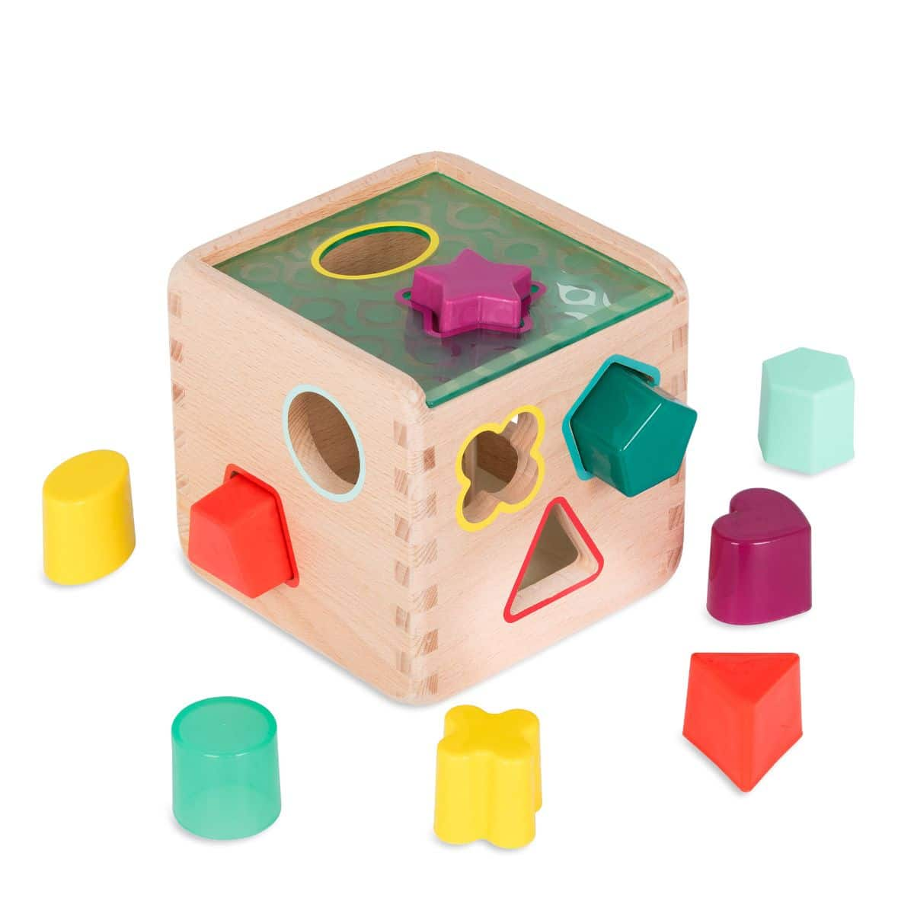
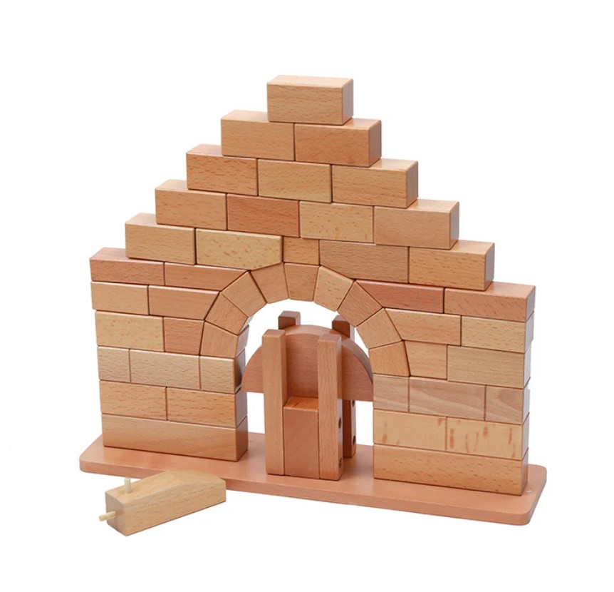
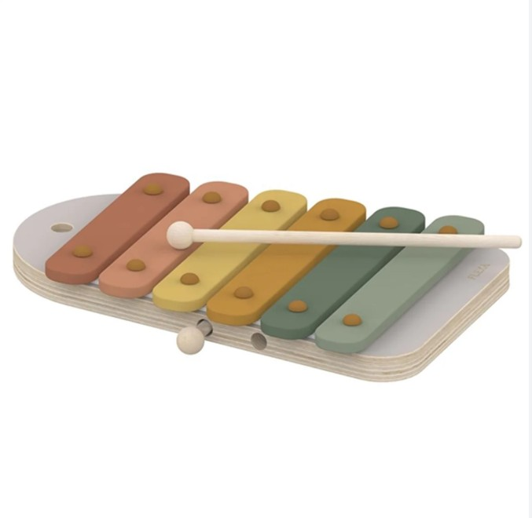
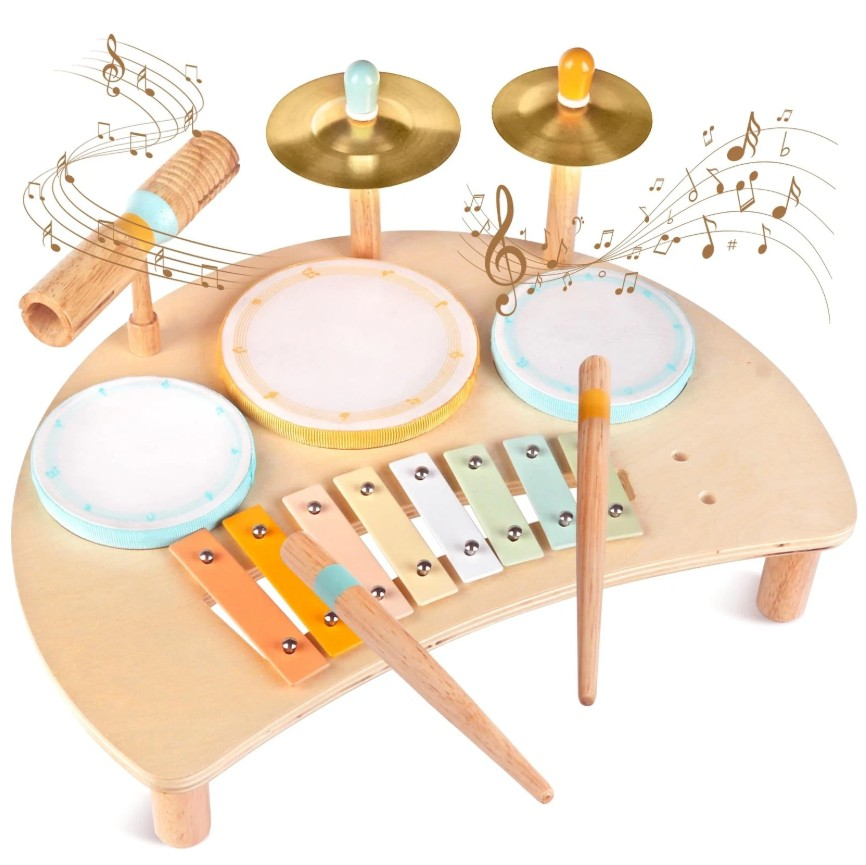

Thoughtfully Crafted Toys
Help the little ones explore, build, and discover.

Six wooden blocks, each with a distinct surface texture to stimulate tactile exploration and sensory awareness in early infancy.

Hand-painted rings in six natural hues. Sized for small hands to grip, stack, and sort — building coordination and color recognition together.

Lightweight wooden balls with carved ridges and smooth zones. Safe for grasping, rolling, and mouthing during early exploration stages.

A 20-piece set of proportional hardwood blocks in four shapes. Teaches balance, spatial reasoning, and cause-and-effect through open-ended play.

Six shape openings, six matching blocks. A timeless problem-solving toy that builds hand-eye coordination and early geometry concepts.

Curved and flat natural wood pieces that invite bridge and tunnel building. Encourages imaginative play while developing structural thinking.

Eight color-coded wooden bars with a smooth mallet. Introduces musical cause and effect, color sequencing, and fine motor precision.
Four palm-sized wooden eggs filled with different natural materials. Each produces a unique sound, teaching listening discrimination and rhythm.

A compact natural wood drum with a soft-tipped mallet. Satisfying to play and gentle enough for indoor use — even for caregivers' ears.